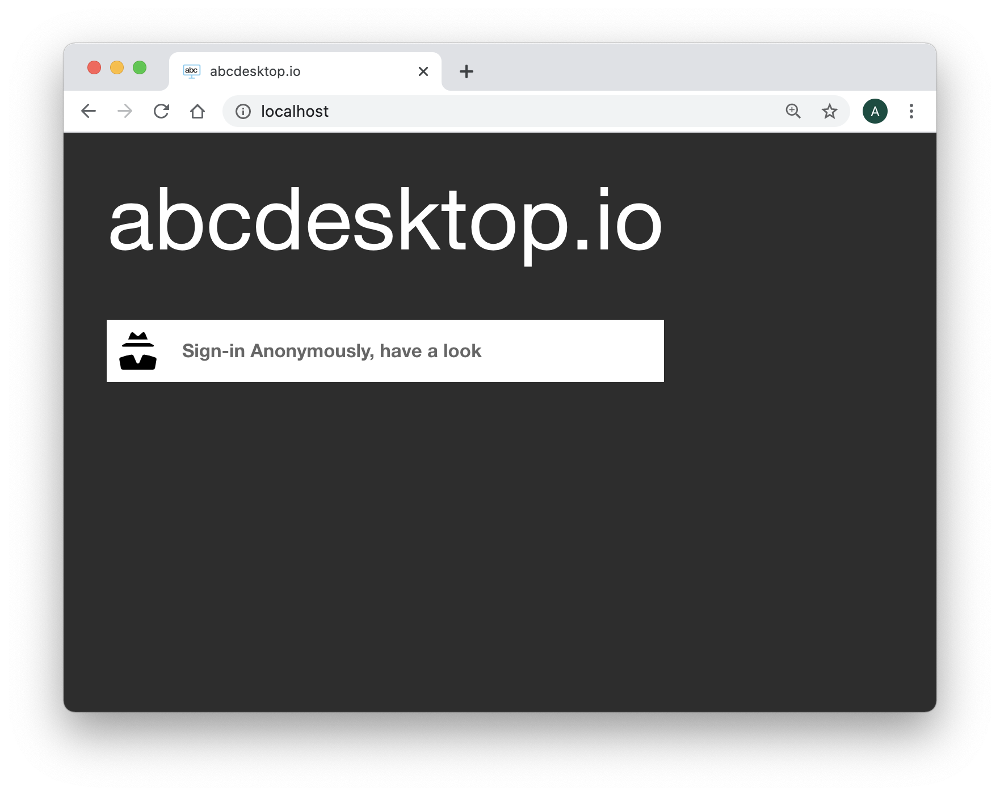
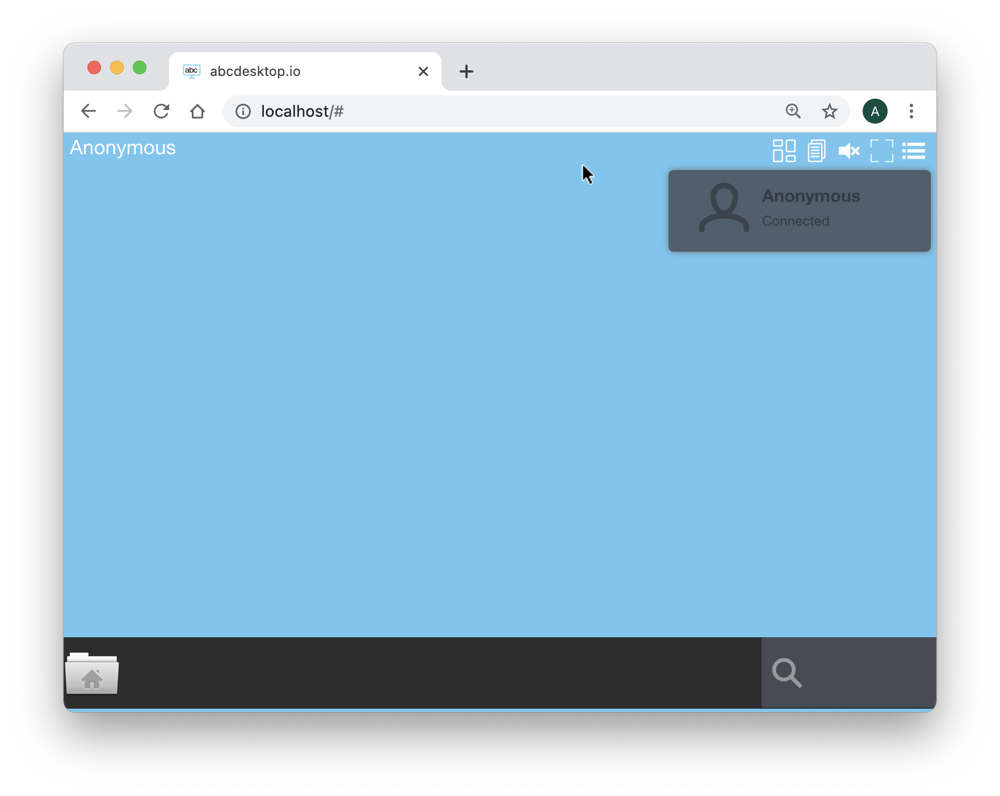
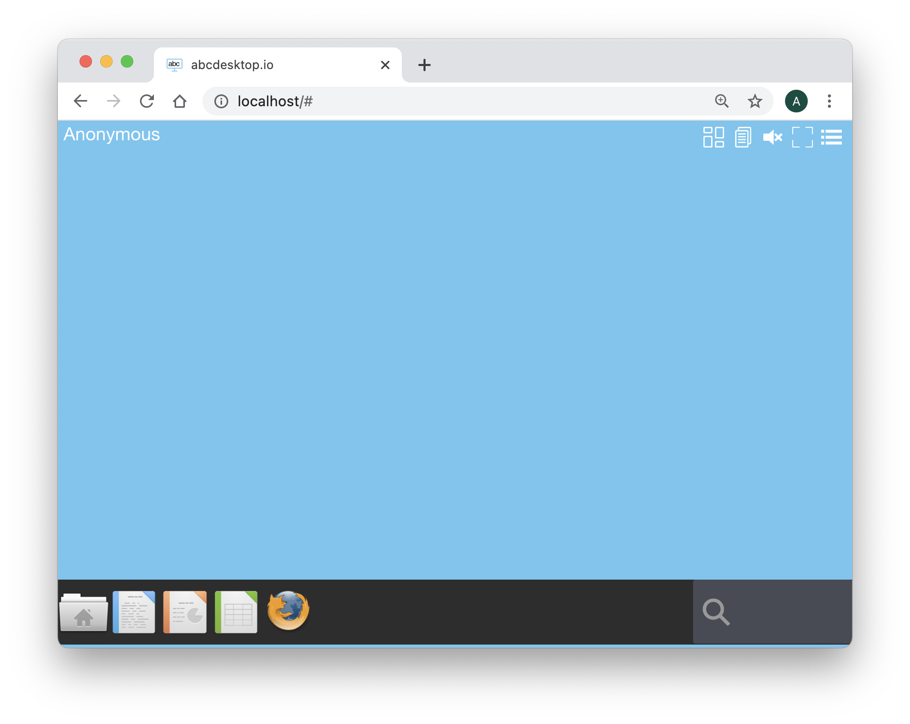
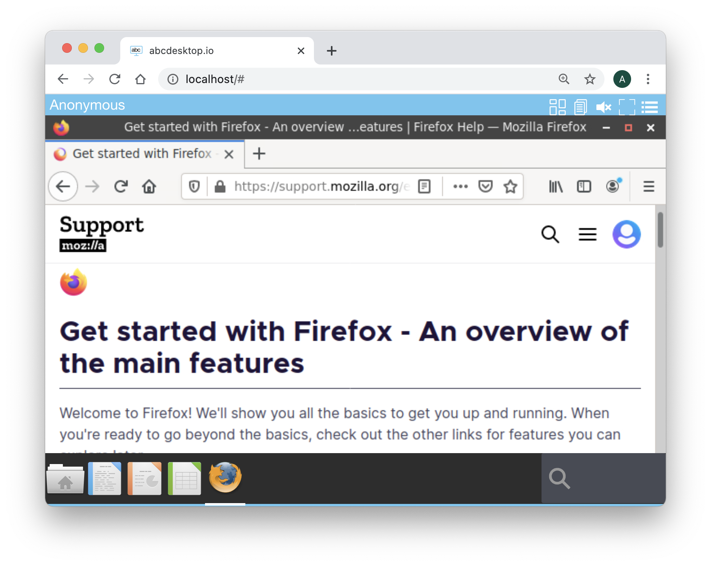

Install abcdesktop.io for non-cluster hosts
abcdesktop.io support non-cluster hosts and kubernetes cluster hosts. In this section we will study how abcdesktop.io works in non-cluster hosts with only one dockerd installed. The abcdesktop.io for non-cluster hosts is recommended for personal use, all containers are hosted on the same host.
In all configuration, the abcdesktop.io infrastructure uses six containers, each container has a specific role :
| Container | Role | Image | Repository |
|---|---|---|---|
| oc.user | User container | abcdesktopio/oc.user.18.04 | abcdesktopio |
| oc.pyos | API Server | abcdesktopio/oc.pyos | abcdesktopio |
| oc.nginx | Web Service (http proxy and http server) | abcdesktopio/oc.nginx | abcdesktopio |
| oc.speedtest | http benchmarch | abcdesktopio/oc.speedtest | from LibreSpeed updated abcdesktopio |
| oc.mongo | json database server | mongodb | MongoDB |
| memcached | cache server | memcached | Memcached |
This page contains hands-on to learn step by step how to use docker-compose with abcdesktop.io.
Requirements for Non-cluster hosts
docker-compose
The command docker-compose is used in this hands-on, to run each containers together.
-
On desktop systems like Docker Desktop for Mac and Windows, Docker Compose is included as part of those desktop installs.
-
On Linux systems, first install the Docker for your OS as described on the Get Docker page, then come back here for instructions on installing Compose on Linux systems.
Quick installation (Linux or macOS)
Quick installation can be run on Linux or macOS operation system. For Microsoft Windows, please read the following chapter 'Manually installation step by step'
You can watch the youtube video sample. This video describes the Quick installation process.
Download and extract the latest release automatically (Linux or macOS):
curl -L https://raw.githubusercontent.com/abcdesktopio/conf/main/docker/install.sh | sh -
The command above downloads the latest release (numerically) of abcdesktop.io. The quick installation process runs the all commands step by step:
- download user's core images: oc.user
- download some applications images sample: the LibreOffice suite (calc, writer, impress), Firefox, Gimp, and gnome-terminal.
- download the docker-compose.yml YAML file
- run
docker-compose -p abcdesktop up
Manually installation step by step (Linux, macOS or Windows)
The following commands will let you install an abcdesktop plateform on your single server. All applications run on the single server.
Pull user container image
The user container is named abcdesktopio/oc.user.18.04. The size of the abcdesktopio/oc.user.18.04 image is up to 2 GB. Download the user container image, using the docker pull commmand :
docker pull abcdesktopio/oc.user.18.04
docker-compose
Create a docker-compose.yml file, and copy & paste this YAML file into.
version: '3'
services:
pyos:
depends_on:
- memcached
- mongodb
image: 'abcdesktopio/oc.pyos'
networks:
- netback
volumes:
- /var/run/docker.sock:/var/run/docker.sock
speedtest:
image: abcdesktopio/oc.speedtest
networks:
- netuser
nginx:
depends_on:
- memcached
- pyos
image: abcdesktopio/oc.nginx
ports:
- '80:80'
- '443:443'
networks:
- netuser
- netback
memcached:
image: memcached
networks:
- netback
mongodb:
image: abcdesktopio/oc.mongo
networks:
- netback
networks:
netuser:
driver: bridge
netback:
internal: true
Run the docker-compose up command with projet name option set to
abcdesktopvalue. The projet nameabcdesktopis used by pyos to reference the network set by default toabcdesktop_netuserYou must set the projet name to
abcdesktop, else the websocket connection will failed
docker-compose -p abcdesktop up
Since the abcdesktop pyos code needs to interact with the Docker API in order to CRUD containers, pyos need to mount /var/run/docker.sock into the container
dockerd downloads all container images, it could take a while
Pulling speedtest (abcdesktopio/oc.speedtest:)...
latest: Pulling from oc.speedtest
....
Status: Downloaded newer image for abcdesktopio/oc.speedtest:latest
Pulling memcached (memcached:)...
latest: Pulling from library/memcached
....
Status: Downloaded newer image for memcached:latest
Pulling mongodb (mongo:4.4)...
latest: Pulling from library/mongo:4.4
....
Status: Downloaded newer image for mongo:latest
Pulling pyos (abcdesktopio/oc.pyos:)...
latest: Pulling from oc.pyos
....
Status: Downloaded newer image for abcdesktopio/oc.pyos:latest
Pulling nginx (abcdesktopio/oc.nginx:)...
latest: Pulling from oc.nginx
....
Status: Downloaded newer image for abcdesktopio/oc.nginx:latest
You should read the output to the standard output
docker-compose -p abcdesktop up
Starting abcdesktop_memcached_1 ... done
Starting abcdesktop_mongodb_1 ... done
Starting abcdesktop_speedtest_1 ... done
Starting abcdesktop_pyos_1 ... done
Starting abcdesktop_nginx_1 ... done
Attaching to abcdesktop_speedtest_1, abcdesktop_mongodb_1, abcdesktop_memcached_1, abcdesktop_pyos_1, abcdesktop_nginx_1
mongodb_1 | {"t":{"$date":"2020-10-02T12:54:15.087+00:00"},"s":"I", "c":"CONTROL", "id":23285, "ctx":"main","msg":"Automatically disabling TLS 1.0, to force-enable TLS 1.0 specify --sslDisabledProtocols 'none'"}
nginx_1 | Kubernetes is not detected
nginx_1 | Using default config file
pyos_1 | Kubernetes is not detected
pyos_1 | Using default config file
mongodb_1 | {"t":{"$date":"2020-10-02T12:54:15.093+00:00"},"s":"W", "c":"ASIO", "id":22601, "ctx":"main","msg":"No TransportLayer configured during NetworkInterface startup"}
speedtest_1 | AH00558: apache2: Could not reliably determine the server's fully qualified domain name, using 172.20.0.2. Set the 'ServerName' directive globally to suppress this message
pyos_1 | total 24
pyos_1 | drwxr-xr-x 2 root root 4096 Sep 19 17:44 .
pyos_1 | drwxr-xr-x 1 root root 4096 Oct 2 12:43 ..
pyos_1 | -rw-r--r-- 1 root root 1679 May 14 17:54 abcdesktop_jwt_desktop_signing_private_key.pem
pyos_1 | -rw-r--r-- 1 root root 452 May 14 17:54 abcdesktop_jwt_desktop_signing_public_key.pem
pyos_1 | -rw-r--r-- 1 root root 891 May 15 09:59 abcdesktop_jwt_user_signing_private_key.pem
pyos_1 | -rw-r--r-- 1 root root 272 May 15 09:59 abcdesktop_jwt_user_signing_public_key.pem
speedtest_1 | AH00558: apache2: Could not reliably determine the server's fully qualified domain name, using 172.20.0.2. Set the 'ServerName' directive globally to suppress this message
mongodb_1 | {"t":{"$date":"2020-10-02T12:54:15.093+00:00"},"s":"I", "c":"NETWORK", "id":4648601, "ctx":"main","msg":"Implicit TCP FastOpen unavailable. If TCP FastOpen is required, set tcpFastOpenServer, tcpFastOpenClient, and tcpFastOpenQueueSize."}
pyos_1 | total 24
pyos_1 | drwxr-xr-x 2 root root 4096 Sep 19 17:44 .
pyos_1 | drwxr-xr-x 1 root root 4096 Oct 2 12:43 ..
pyos_1 | -rw-r--r-- 1 root root 1679 May 14 17:54 abcdesktop_jwt_desktop_signing_private_key.pem
pyos_1 | -rw-r--r-- 1 root root 452 May 14 17:54 abcdesktop_jwt_desktop_signing_public_key.pem
pyos_1 | -rw-r--r-- 1 root root 891 May 15 09:59 abcdesktop_jwt_user_signing_private_key.pem
pyos_1 | -rw-r--r-- 1 root root 272 May 15 09:59 abcdesktop_jwt_user_signing_public_key.pem
pyos_1 | starting od.py
speedtest_1 | [Fri Oct 02 12:54:15.121521 2020] [mpm_prefork:notice] [pid 1] AH00163: Apache/2.4.25 (Debian) PHP/5.6.36 configured -- resuming normal operations
speedtest_1 | [Fri Oct 02 12:54:15.121740 2020] [core:notice] [pid 1] AH00094: Command line: 'apache2 -D FOREGROUND'
mongodb_1 | {"t":{"$date":"2020-10-02T12:54:15.094+00:00"},"s":"I", "c":"STORAGE", "id":4615611, "ctx":"initandlisten","msg":"MongoDB starting","attr":{"pid":1,"port":27017,"dbPath":"/data/db","architecture":"64-bit","host":"a466db429025"}}
mongodb_1 | {"t":{"$date":"2020-10-02T12:54:15.094+00:00"},"s":"I", "c":"CONTROL", "id":23403, "ctx":"initandlisten","msg":"Build Info","attr":{"buildInfo":{"version":"4.4.1","gitVersion":"ad91a93a5a31e175f5cbf8c69561e788bbc55ce1","openSSLVersion":"OpenSSL 1.1.1 11 Sep 2018","modules":[],"allocator":"tcmalloc","environment":{"distmod":"ubuntu1804","distarch":"x86_64","target_arch":"x86_64"}}}}
mongodb_1 | {"t":{"$date":"2020-10-02T12:54:15.094+00:00"},"s":"I", "c":"CONTROL", "id":51765, "ctx":"initandlisten","msg":"Operating System","attr":{"os":{"name":"Ubuntu","version":"18.04"}}}
mongodb_1 | {"t":{"$date":"2020-10-02T12:54:15.094+00:00"},"s":"I", "c":"CONTROL", "id":21951, "ctx":"initandlisten","msg":"Options set by command line","attr":{"options":{"net":{"bindIp":"*"}}}}
mongodb_1 | {"t":{"$date":"2020-10-02T12:54:15.095+00:00"},"s":"W", "c":"STORAGE", "id":22271, "ctx":"initandlisten","msg":"Detected unclean shutdown - Lock file is not empty","attr":{"lockFile":"/data/db/mongod.lock"}}
mongodb_1 | {"t":{"$date":"2020-10-02T12:54:15.095+00:00"},"s":"I", "c":"STORAGE", "id":22270, "ctx":"initandlisten","msg":"Storage engine to use detected by data files","attr":{"dbpath":"/data/db","storageEngine":"wiredTiger"}}
mongodb_1 | {"t":{"$date":"2020-10-02T12:54:15.095+00:00"},"s":"W", "c":"STORAGE", "id":22302, "ctx":"initandlisten","msg":"Recovering data from the last clean checkpoint."}
mongodb_1 | {"t":{"$date":"2020-10-02T12:54:15.095+00:00"},"s":"I", "c":"STORAGE", "id":22297, "ctx":"initandlisten","msg":"Using the XFS filesystem is strongly recommended with the WiredTiger storage engine. See http://dochub.mongodb.org/core/prodnotes-filesystem","tags":["startupWarnings"]}
mongodb_1 | {"t":{"$date":"2020-10-02T12:54:15.096+00:00"},"s":"I", "c":"STORAGE", "id":22315, "ctx":"initandlisten","msg":"Opening WiredTiger","attr":{"config":"create,cache_size=483M,session_max=33000,eviction=(threads_min=4,threads_max=4),config_base=false,statistics=(fast),log=(enabled=true,archive=true,path=journal,compressor=snappy),file_manager=(close_idle_time=100000,close_scan_interval=10,close_handle_minimum=250),statistics_log=(wait=0),verbose=[recovery_progress,checkpoint_progress,compact_progress],"}}
mongodb_1 | {"t":{"$date":"2020-10-02T12:54:15.602+00:00"},"s":"I", "c":"STORAGE", "id":22430, "ctx":"initandlisten","msg":"WiredTiger message","attr":{"message":"[1601643255:602890][1:0x7f1abada1a80], txn-recover: [WT_VERB_RECOVERY_PROGRESS] Recovering log 3 through 4"}}
mongodb_1 | {"t":{"$date":"2020-10-02T12:54:15.644+00:00"},"s":"I", "c":"STORAGE", "id":22430, "ctx":"initandlisten","msg":"WiredTiger message","attr":{"message":"[1601643255:644351][1:0x7f1abada1a80], txn-recover: [WT_VERB_RECOVERY_PROGRESS] Recovering log 4 through 4"}}
mongodb_1 | {"t":{"$date":"2020-10-02T12:54:15.701+00:00"},"s":"I", "c":"STORAGE", "id":22430, "ctx":"initandlisten","msg":"WiredTiger message","attr":{"message":"[1601643255:701929][1:0x7f1abada1a80], txn-recover: [WT_VERB_RECOVERY | WT_VERB_RECOVERY_PROGRESS] Main recovery loop: starting at 3/256 to 4/256"}}
mongodb_1 | {"t":{"$date":"2020-10-02T12:54:15.702+00:00"},"s":"I", "c":"STORAGE", "id":22430, "ctx":"initandlisten","msg":"WiredTiger message","attr":{"message":"[1601643255:702746][1:0x7f1abada1a80], txn-recover: [WT_VERB_RECOVERY_PROGRESS] Recovering log 3 through 4"}}
mongodb_1 | {"t":{"$date":"2020-10-02T12:54:15.757+00:00"},"s":"I", "c":"STORAGE", "id":22430, "ctx":"initandlisten","msg":"WiredTiger message","attr":{"message":"[1601643255:757732][1:0x7f1abada1a80], file:index-3--1134620176205790706.wt, txn-recover: [WT_VERB_RECOVERY_PROGRESS] Recovering log 4 through 4"}}
mongodb_1 | {"t":{"$date":"2020-10-02T12:54:15.793+00:00"},"s":"I", "c":"STORAGE", "id":22430, "ctx":"initandlisten","msg":"WiredTiger message","attr":{"message":"[1601643255:793168][1:0x7f1abada1a80], file:index-3--1134620176205790706.wt, txn-recover: [WT_VERB_RECOVERY | WT_VERB_RECOVERY_PROGRESS] Set global recovery timestamp: (0, 0)"}}
mongodb_1 | {"t":{"$date":"2020-10-02T12:54:15.793+00:00"},"s":"I", "c":"STORAGE", "id":22430, "ctx":"initandlisten","msg":"WiredTiger message","attr":{"message":"[1601643255:793225][1:0x7f1abada1a80], file:index-3--1134620176205790706.wt, txn-recover: [WT_VERB_RECOVERY | WT_VERB_RECOVERY_PROGRESS] Set global oldest timestamp: (0, 0)"}}
mongodb_1 | {"t":{"$date":"2020-10-02T12:54:15.801+00:00"},"s":"I", "c":"STORAGE", "id":4795906, "ctx":"initandlisten","msg":"WiredTiger opened","attr":{"durationMillis":705}}
mongodb_1 | {"t":{"$date":"2020-10-02T12:54:15.802+00:00"},"s":"I", "c":"RECOVERY", "id":23987, "ctx":"initandlisten","msg":"WiredTiger recoveryTimestamp","attr":{"recoveryTimestamp":{"$timestamp":{"t":0,"i":0}}}}
mongodb_1 | {"t":{"$date":"2020-10-02T12:54:15.814+00:00"},"s":"I", "c":"STORAGE", "id":22262, "ctx":"initandlisten","msg":"Timestamp monitor starting"}
mongodb_1 | {"t":{"$date":"2020-10-02T12:54:15.816+00:00"},"s":"W", "c":"CONTROL", "id":22120, "ctx":"initandlisten","msg":"Access control is not enabled for the database. Read and write access to data and configuration is unrestricted","tags":["startupWarnings"]}
nginx_1 | nginx: [warn] duplicate MIME type "text/html" in /etc/nginx/nginx.conf:68
mongodb_1 | {"t":{"$date":"2020-10-02T12:54:15.824+00:00"},"s":"I", "c":"STORAGE", "id":20536, "ctx":"initandlisten","msg":"Flow Control is enabled on this deployment"}
mongodb_1 | {"t":{"$date":"2020-10-02T12:54:15.826+00:00"},"s":"I", "c":"FTDC", "id":20625, "ctx":"initandlisten","msg":"Initializing full-time diagnostic data capture","attr":{"dataDirectory":"/data/db/diagnostic.data"}}
mongodb_1 | {"t":{"$date":"2020-10-02T12:54:15.829+00:00"},"s":"I", "c":"NETWORK", "id":23015, "ctx":"listener","msg":"Listening on","attr":{"address":"/tmp/mongodb-27017.sock"}}
mongodb_1 | {"t":{"$date":"2020-10-02T12:54:15.829+00:00"},"s":"I", "c":"NETWORK", "id":23015, "ctx":"listener","msg":"Listening on","attr":{"address":"0.0.0.0"}}
mongodb_1 | {"t":{"$date":"2020-10-02T12:54:15.829+00:00"},"s":"I", "c":"NETWORK", "id":23016, "ctx":"listener","msg":"Waiting for connections","attr":{"port":27017,"ssl":"off"}}
pyos_1 | /usr/lib/python3/dist-packages/requests/__init__.py:80: RequestsDependencyWarning: urllib3 (1.25.10) or chardet (3.0.4) doesn't match a supported version!
pyos_1 | RequestsDependencyWarning)
pyos_1 | 2020-10-02 12:54:16,239 [INFO ] oc.logging.init_logging: Initializing logging subsystem
pyos_1 | 2020-10-02 12:54:16,239 [INFO ] oc.logging.load_config: Reading cherrypy configuration section 'global/logging': path = od.config
pyos_1 | 2020-10-02 12:54:16,244 [INFO ] oc.logging.init_logging: Applying configuration
pyos_1 | 2020-10-02 12:54:16 settings [INFO ] oc.od.settings.init:internal Init configuration ---
pyos_1 | 2020-10-02 12:54:16 settings [INFO ] oc.od.settings.load:internal Loading configuration file 'od.config'
pyos_1 | 2020-10-02 12:54:16 settings [WARNING] oc.od.settings.init_tls:internal SECURITY Warning clienttlskey is not set
pyos_1 | 2020-10-02 12:54:16 settings [WARNING] oc.od.settings.init_tls:internal SECURITY Warning clienttlscert is not set
pyos_1 | 2020-10-02 12:54:16 settings [WARNING] oc.od.settings.init_tls:internal SECURITY Warning tlscacert is not set
pyos_1 | 2020-10-02 12:54:16 settings [WARNING] oc.od.settings.init_tls:internal SECURITY Warning connection to docker dameon on host may failed or is insecure
pyos_1 | 2020-10-02 12:54:16 settings [WARNING] oc.od.settings.init_tls:internal Read HOWTO-configure documentation
pyos_1 | 2020-10-02 12:54:16 settings [INFO ] oc.od.settings.init_config_mail_shared:internal Missing mail shared gconfig parameters, shared sendmail is disabled
pyos_1 | 2020-10-02 12:54:16 settings [INFO ] oc.od.settings.init_config_mail_support:internal Missing mail support gconfig parameters, support sendmail is disabled
pyos_1 | 2020-10-02 12:54:16 settings [INFO ] oc.od.settings.init_defaulthostfqdn:internal default_host_url: http://localhost
pyos_1 | 2020-10-02 12:54:16 settings [INFO ] oc.od.settings.init_defaulthostfqdn:internal default_server_ipaddr: 127.0.0.1
pyos_1 | 2020-10-02 12:54:16 settings [DEBUG ] oc.od.settings.init_config_auth:internal {}
pyos_1 | 2020-10-02 12:54:16 settings [INFO ] oc.od.settings.get_mongoconfig:internal MONGODB_URL: None
pyos_1 | 2020-10-02 12:54:16 settings [INFO ] oc.od.settings.get_mongoconfig:internal mongodburl is mongodb://mongodb:27017
pyos_1 | 2020-10-02 12:54:16 settings [INFO ] oc.od.settings.get_mongoconfig:internal host mongodb resolved as 172.21.0.3
pyos_1 | 2020-10-02 12:54:16 settings [INFO ] oc.od.settings.get_mongoconfig:internal mongodburl is set to: mongodb://mongodb:27017
pyos_1 | 2020-10-02 12:54:16 datastore [INFO ] oc.datastore.MongoClientConfig.__init__:internal mongodb client config server mongodb://mongodb:27017
pyos_1 | 2020-10-02 12:54:16 settings [INFO ] oc.od.settings.init_config_mongodb:internal MongoDB connection string: mongodb://mongodb:27017
pyos_1 | 2020-10-02 12:54:16 settings [INFO ] oc.od.settings.init_config_memcached:internal stackmode is standalone
pyos_1 | 2020-10-02 12:54:16 settings [INFO ] oc.od.settings.init_config_memcached:internal memcachedhostname is memcached
pyos_1 | 2020-10-02 12:54:16 settings [INFO ] oc.od.settings.init_config_memcached:internal host memcached resolved as 172.21.0.2
pyos_1 | 2020-10-02 12:54:16 settings [INFO ] oc.od.settings.init_config_memcached:internal Memcached connection string is set to: 172.21.0.2:11211
pyos_1 | 2020-10-02 12:54:16 settings [INFO ] oc.od.settings.init_webdav:internal webdav support is : False
pyos_1 | 2020-10-02 12:54:16 settings [INFO ] oc.od.settings.init_websocketrouting:internal mode is http_origin
pyos_1 | 2020-10-02 12:54:16 settings [INFO ] oc.od.settings.init_policy:internal User Execute Policy is False
pyos_1 | 2020-10-02 12:54:16 settings [INFO ] oc.od.settings.init_policy:internal Network Control Policy is False
pyos_1 | 2020-10-02 12:54:16 settings [INFO ] oc.od.settings.init_locales:internal Supported local language is set to ['af_ZA', 'am_ET', 'an_ES', 'ar_AE', 'ar_BH', 'ar_DZ', 'ar_EG', 'ar_IN', 'ar_IQ', 'ar_JO', 'ar_KW', 'ar_LB', 'ar_LY', 'ar_MA', 'ar_OM', 'ar_QA', 'ar_SA', 'ar_SD', 'ar_SY', 'ar_TN', 'ar_YE', 'as_IN', 'ast_ES', 'az_AZ', 'be_BY', 'bg_BG', 'bn_BD', 'bn_IN', 'bo_CN', 'bo_IN', 'br_FR', 'bs_BA', 'ca_AD', 'ca_ES', 'ca_FR', 'ca_IT', 'crh_UA', 'cs_CZ', 'cy_GB', 'da_DK', 'de_AT', 'de_BE', 'de_CH', 'de_DE', 'de_LI', 'de_LU', 'dz_BT', 'el_CY', 'el_GR', 'en_AG', 'en_AU', 'en_BW', 'en_CA', 'en_DK', 'en_GB', 'en_HK', 'en_IE', 'en_IN', 'en_NG', 'en_NZ', 'en_PH', 'en_SG', 'en_US', 'en_ZA', 'en_ZM', 'en_ZW', 'eo', 'eo_US', 'es_AR', 'es_BO', 'es_CL', 'es_CO', 'es_CR', 'es_CU', 'es_DO', 'es_EC', 'es_ES', 'es_GT', 'es_HN', 'es_MX', 'es_NI', 'es_PA', 'es_PE', 'es_PR', 'es_PY', 'es_SV', 'es_US', 'es_UY', 'es_VE', 'et_EE', 'eu_ES', 'eu_FR', 'fa_IR', 'fi_FI', 'fr_BE', 'fr_CA', 'fr_CH', 'fr_FR', 'fr_LU', 'ga_IE', 'gd_GB', 'gl_ES', 'gu_IN', 'he_IL', 'hi_IN', 'hr_HR', 'hu_HU', 'id_ID', 'is_IS', 'it_CH', 'it_IT', 'ja_JP', 'ka_GE', 'kk_KZ', 'km_KH', 'kn_IN', 'ko_KR', 'ku_TR', 'lt_LT', 'lv_LV', 'mai_IN', 'mk_MK', 'ml_IN', 'mn_MN', 'mr_IN', 'ms_MY', 'my_MM', 'nb_NO', 'nds_DE', 'nds_NL', 'ne_NP', 'nl_AW', 'nl_BE', 'nl_NL', 'nn_NO', 'oc_FR', 'or_IN', 'pa_IN', 'pa_PK', 'pl_PL', 'pt_BR', 'pt_PT', 'ro_RO', 'ru_RU', 'ru_UA', 'si_LK', 'sk_SK', 'sl_SI', 'sq_AL', 'sq_MK', 'sr_ME', 'sr_RS', 'sv_FI', 'sv_SE', 'ta_IN', 'ta_LK', 'te_IN', 'tg_TJ', 'th_TH', 'tr_CY', 'tr_TR', 'ug_CN', 'uk_UA', 'uz_UZ', 'vi_VN', 'xh_ZA', 'zh_CN', 'zh_HK', 'zh_SG', 'zh_TW']
pyos_1 | 2020-10-02 12:54:16 settings [INFO ] oc.od.settings.init:internal Init configuration done.
pyos_1 | 2020-10-02 12:54:16 services [INFO ] oc.od.services.init_messageinfo:internal
pyos_1 | 2020-10-02 12:54:16 services [INFO ] oc.od.services.init_accounting:internal
pyos_1 | 2020-10-02 12:54:16 services [INFO ] oc.od.services.init_datastore:internal
pyos_1 | 2020-10-02 12:54:16 services [INFO ] oc.od.services.init_datacache:internal
pyos_1 | 2020-10-02 12:54:16 services [INFO ] oc.od.services.init_auth:internal
pyos_1 | 2020-10-02 12:54:16 authservice [INFO ] oc.auth.authservice.__init__:internal Adding Auth manager external
pyos_1 | 2020-10-02 12:54:16 authservice [INFO ] oc.auth.authservice.__init__:internal Adding Auth manager explicit
pyos_1 | 2020-10-02 12:54:16 authservice [INFO ] oc.auth.authservice.__init__:internal Adding Auth manager implicit
pyos_1 | 2020-10-02 12:54:16 authservice [INFO ] oc.auth.authservice.initproviders:internal Adding provider name anonymous
pyos_1 | 2020-10-02 12:54:16 services [INFO ] oc.od.services.init_internaldns:internal
pyos_1 | 2020-10-02 12:54:16 services [INFO ] oc.od.services.init_resolvnetbios:internal
pyos_1 | 2020-10-02 12:54:16 services [INFO ] oc.od.services.init_jwtdesktop:internal
pyos_1 | 2020-10-02 12:54:16 services [INFO ] oc.od.services.init_locator:internal
pyos_1 | 2020-10-02 12:54:16 services [INFO ] oc.od.services.init_webrtc:internal
pyos_1 | 2020-10-02 12:54:16 services [INFO ] oc.od.services.init_infra:internal
pyos_1 | 2020-10-02 12:54:16 services [INFO ] oc.od.services.init_infra:internal Configuration file stack_mode is set to standalone
pyos_1 | 2020-10-02 12:54:16 infra [INFO ] oc.od.infra.ODInfra.__init__:internal nodehostname=None
pyos_1 | 2020-10-02 12:54:16 infra [INFO ] oc.od.infra.ODInfra.getdockerClient:internal Creating client: base_url = 'unix://var/run/docker.sock'
pyos_1 | 2020-10-02 12:54:16 orchestrator [DEBUG ] oc.od.orchestrator.ODOrchestratorKubernetes.__init__:internal config.load_kube_config not in cluster mode
pyos_1 | 2020-10-02 12:54:16 orchestrator [WARNING] oc.od.orchestrator.ODOrchestratorKubernetes.__init__:internal Invalid kube-config file. No configuration found.
pyos_1 | 2020-10-02 12:54:16 orchestrator [DEBUG ] oc.od.orchestrator.ODOrchestratorKubernetes.__init__:internal ODOrchestratorKubernetes __init__ done configure=False
pyos_1 | 2020-10-02 12:54:16 services [INFO ] oc.od.services.init_infra:internal abcdesktop mode is using mode : standalone
pyos_1 | 2020-10-02 12:54:16 infra [INFO ] oc.od.infra.ODInfra.__init__:internal nodehostname=None
pyos_1 | 2020-10-02 12:54:16 infra [INFO ] oc.od.infra.ODInfra.getdockerClient:internal Creating client: base_url = 'unix://var/run/docker.sock'
pyos_1 | 2020-10-02 12:54:16 services [INFO ] oc.od.services.init_infra:internal default overlay network: abcdesktop_netuser - id ae6fbd05f88267783ff4910570e83d1a30d3fbe2e07c766632296e2707f56836
pyos_1 | 2020-10-02 12:54:16 services [INFO ] oc.od.services.init_appscache:internal
pyos_1 | 2020-10-02 12:54:16 apps [DEBUG ] oc.od.apps.build_applist:internal
pyos_1 | 2020-10-02 12:54:16 infra [INFO ] oc.od.infra.ODInfra.__init__:internal nodehostname=None
pyos_1 | 2020-10-02 12:54:16 infra [DEBUG ] oc.od.infra.ODInfra.getdockerClientAPI:internal Creating client: base_url = 'unix://var/run/docker.sock
pyos_1 | 2020-10-02 12:54:16 apps [DEBUG ] oc.od.apps.build_applist:internal end
pyos_1 | 2020-10-02 12:54:16 od [INFO ] __main__.run_server:internal Starting cherrypy service...
pyos_1 | 2020-10-02 12:54:16 pyutils [DEBUG ] oc.pyutils.import_classes:internal Importing module 'controllers.accounting_controller'
pyos_1 | 2020-10-02 12:54:16 pyutils [DEBUG ] oc.pyutils.import_classes:internal Importing module 'controllers.auth_controller'
pyos_1 | 2020-10-02 12:54:17 pyutils [DEBUG ] oc.pyutils.import_classes:internal Importing module 'controllers.composer_controller'
pyos_1 | 2020-10-02 12:54:17 pyutils [DEBUG ] oc.pyutils.import_classes:internal Importing module 'controllers.core_controller'
pyos_1 | 2020-10-02 12:54:17 pyutils [DEBUG ] oc.pyutils.import_classes:internal Importing module 'controllers.directory_controller'
pyos_1 | 2020-10-02 12:54:17 pyutils [DEBUG ] oc.pyutils.import_classes:internal Importing module 'controllers.key_controller'
pyos_1 | 2020-10-02 12:54:17 pyutils [DEBUG ] oc.pyutils.import_classes:internal Importing module 'controllers.manager_controller'
pyos_1 | 2020-10-02 12:54:17 pyutils [DEBUG ] oc.pyutils.import_classes:internal Importing module 'controllers.printer_controller'
pyos_1 | 2020-10-02 12:54:17 pyutils [DEBUG ] oc.pyutils.import_classes:internal Importing module 'controllers.store_controller'
pyos_1 | 2020-10-02 12:54:17 pyutils [DEBUG ] oc.pyutils.import_classes:internal Importing module 'controllers.user_controller'
pyos_1 | 2020-10-02 12:54:17 pyutils [DEBUG ] oc.pyutils.import_classes:internal Importing module 'controllers.webrtc_controller'
pyos_1 | 2020-10-02 12:54:17 cherrypy [DEBUG ] oc.cherrypy.create_controllers:internal instancing class AccountingController
pyos_1 | 2020-10-02 12:54:17 cherrypy [DEBUG ] oc.cherrypy.create_controllers:internal instancing class AuthController
pyos_1 | 2020-10-02 12:54:17 cherrypy [DEBUG ] oc.cherrypy.create_controllers:internal instancing class ComposerController
pyos_1 | 2020-10-02 12:54:17 cherrypy [DEBUG ] oc.cherrypy.create_controllers:internal instancing class CoreController
pyos_1 | 2020-10-02 12:54:17 cherrypy [DEBUG ] oc.cherrypy.create_controllers:internal instancing class DirectoryController
pyos_1 | 2020-10-02 12:54:17 cherrypy [DEBUG ] oc.cherrypy.create_controllers:internal instancing class KeyController
pyos_1 | 2020-10-02 12:54:17 cherrypy [DEBUG ] oc.cherrypy.create_controllers:internal instancing class ManagerController
pyos_1 | 2020-10-02 12:54:17 cherrypy [DEBUG ] oc.cherrypy.create_controllers:internal instancing class PrinterController
pyos_1 | 2020-10-02 12:54:17 cherrypy [DEBUG ] oc.cherrypy.create_controllers:internal instancing class StoreController
pyos_1 | 2020-10-02 12:54:17 cherrypy [DEBUG ] oc.cherrypy.create_controllers:internal instancing class UserController
pyos_1 | 2020-10-02 12:54:17 cherrypy [DEBUG ] oc.cherrypy.create_controllers:internal instancing class WebRTCController
pyos_1 | 2020-10-02 12:54:17 od [INFO ] __main__.run_server:anonymous Waiting for requests...
Check that the last pyos line is Waiting for requests...
Start your web browser
Start a web browser and go to your host where the docker-compose is running, in this example i run abcdesktopio on my laptop, http://localhost
abcdesktopio use websockets, by default websocket connection establishment is permit to localhost.
http://localhost
You should see the authentication HTML page with the Sign-in Anonymously button

Click on the Sign-in Anonymously, have a look access button. Pyos is creating a new desktop using the user container docker image oc.user.18.04.
Few seconds later, processes are ready to run. You should see the abcdesktop main screen, with only one application File Manager.

Great you have installed abcdesktop.io in Docker mode. You just need a web browser to reach your web workspace.
Networks abcdesktop_netuser and abcdestkop_netback
abcdesktop.io in docker mode use two docker networks abcdesktop_netuser and abcdesktop_netback.
abcdesktop_netuseris a dedicated network between nginx and the user containers.abcdesktop_netbackis a dedicated network nginx, pyos, mongodb and memcache
By design, and for security reasons, the user containers can not (and never) reach the netback network. If a process running inside the user container have to send a message to the API server, the message is send to the user's web browser and then forwarded to the API Server.
The
abcdesktop_netuserbridge your local interface has defined in the docker-compose file, so you can reach the nginx website usinghttp://localhost
netuser:
driver: bridge
List all docker containers
Start a new shell and run the docker ps -a command to list all the containers
docker ps -a
You should read the output
CONTAINER ID IMAGE COMMAND CREATED STATUS PORTS NAMES
9376fc4e571e abcdesktopio/oc.user.18.04 "/composer/docker-en…" 40 seconds ago Up 39 seconds 4714/tcp, 6081/tcp, 29780-29781/tcp, 29783-29784/tcp, 29786/tcp, 55556-55557/tcp g-340cabd2-6509-4609-8f82-3a713900be1f
0fcd8663d02c abcdesktopio/oc.nginx "/composer/docker-en…" 13 minutes ago Up 2 minutes 0.0.0.0:80->80/tcp, 554/tcp, 8554/tcp, 0.0.0.0:443->443/tcp, 9000/tcp abcdesktop_nginx_1
83d1c047cbf0 abcdesktopio/oc.pyos "/composer/docker-en…" 13 minutes ago Up 2 minutes abcdesktop_pyos_1
a466db429025 mongo "docker-entrypoint.s…" 13 minutes ago Up 2 minutes abcdesktop_mongodb_1
219eb62a89a4 abcdesktopio/oc.speedtest "docker-php-entrypoi…" 13 minutes ago Up 2 minutes 80/tcp abcdesktop_speedtest_1
676ca0fcf3a5 memcached "docker-entrypoint.s…" 13 minutes ago Up 2 minutes abcdesktop_memcached_1
The new abcdesktop user container has been created
9376fc4e571e abcdesktopio/oc.user.18.04:latest "/composer/docker-en…"
Add new applications to your desktop
There is only one application on your desktop the File Manager. It's now time to add new application. Each application is a docker container, to install new docker container run the docker pull command :
Install LibreOffice Suite
docker pull abcdesktopio/base.d
docker pull abcdesktopio/calc.d
docker pull abcdesktopio/impress.d
docker pull abcdesktopio/math.d
docker pull abcdesktopio/writer.d
Install Mozilla Suite
docker pull abcdesktopio/firefox.d
docker pull abcdesktopio/thunderbird.d
Install Gnome games
docker pull abcdesktopio/mines.d
docker pull abcdesktopio/tetravex.d
Install Gnome tools
docker pull abcdesktopio/calculator.d
docker pull abcdesktopio/terminal.d
Update the cache application list
The API server receives a new image event from dockerd. To run the new applications just refresh you web browser page.
Now reconnect to your abcdesktop.
Reload your web browser page or start a new session. It's time to run the LibreOffice applications.

New applications appear in the dock, start the application Firefox for example.

Firefox application is running inside a container.
Ready to use for a personal usage
Great, you have installed abcdesktop.io in non-cluster hosts, and pull images for your workspace. You can build and add your application.